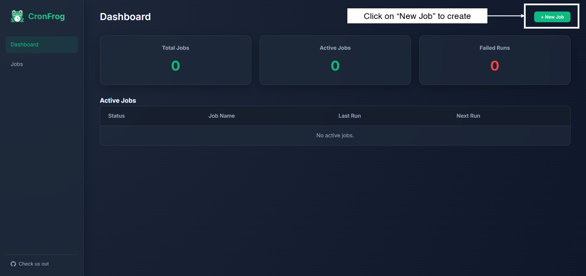
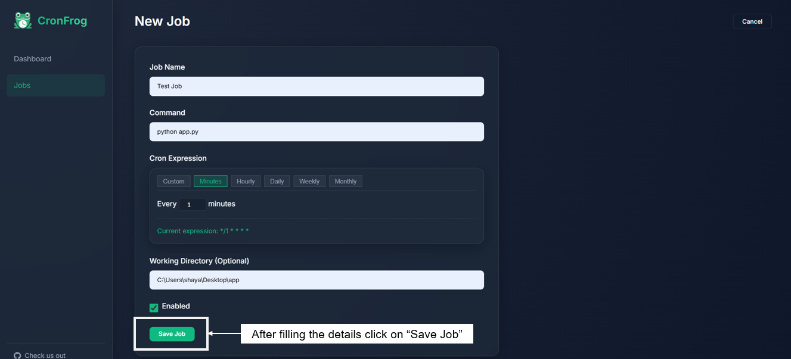
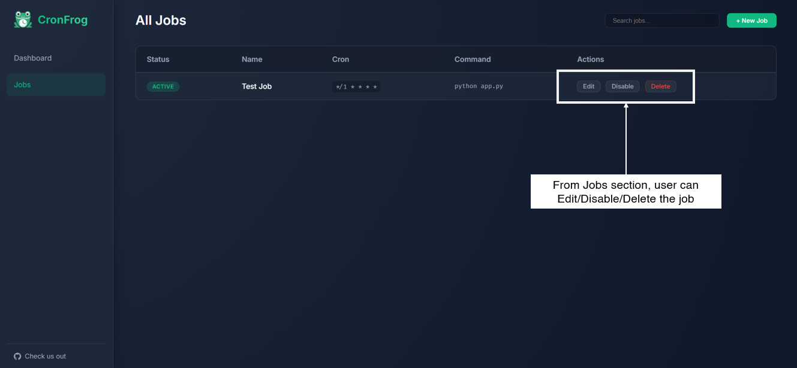
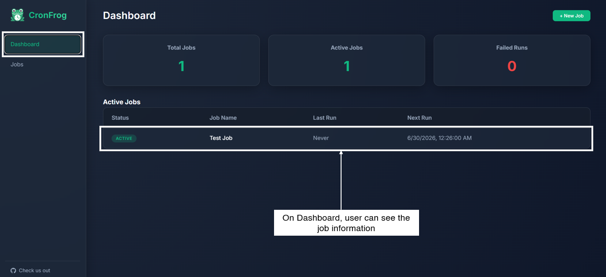
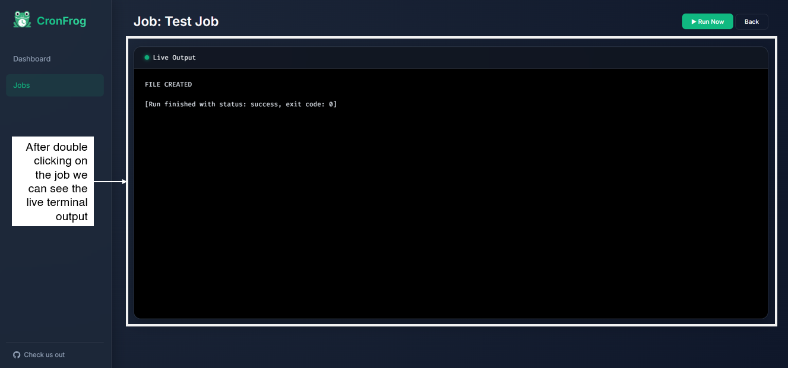

A lightweight, self-hosted job scheduler with a real-time web dashboard. No Redis, no Celery, no complexity — just Python, SQLite, and your browser.
CronFrog is designed to be simple, powerful, and self-contained. No external infrastructure required.
Watch your jobs execute live via WebSockets. Standard output and error streams are pushed to your browser instantly — no polling, no refresh.
Uses SQLite for persistence. No database server to install, no connection strings to configure. Your data is stored in a single portable file.
An interactive visual builder for cron expressions. Pick from presets (minutely, hourly, daily, weekly, monthly) or write your own custom expression.
A responsive single-page application with job statistics, execution history, status badges, and an integrated live terminal view.
Full REST API with auto-generated Swagger UI documentation at /docs. Create, manage, and trigger jobs programmatically.
The HTTP server, background scheduler, and job executor all run in one Python process sharing one asyncio event loop. Deploy with a single command.
A quick visual guide to creating and monitoring your first scheduled job.
Navigate to your CronFrog instance. The dashboard shows aggregate stats — total jobs, active jobs, and failed runs — along with a table of all currently active jobs and their next scheduled run time.

Click "New Job" and fill in the name, shell command, and cron schedule. Use the interactive cron builder to pick a preset (every 5 minutes, daily at midnight, etc.) or type a custom expression.

All jobs appear in the Jobs list. From here you can enable, disable, edit, or delete any job. You can also trigger a manual run at any time with one click.

Status badges update in real time. Green means active and healthy, amber means currently running, and red indicates the last run failed. Check the next-run time at a glance.

Click on any job to open the live terminal. Standard output streams in real time via WebSocket. Errors are highlighted in red. The terminal auto-scrolls unless you scroll up to inspect earlier output.

Clone, install, run. That's it.
git clone https://github.com/shayansaha85/cronfrog.git
cd cronfrog# Create the environment
python -m venv venv
# Activate on Windows (PowerShell)
venv\Scripts\activate
# Activate on macOS / Linux
source venv/bin/activatepip install -r requirements.txtpython run.pyThe server starts on port 8000 by default. Open http://localhost:8000 in your browser.
Custom port: $env:PORT=8080; python run.py (Windows) or PORT=8080 python run.py (Linux/macOS)